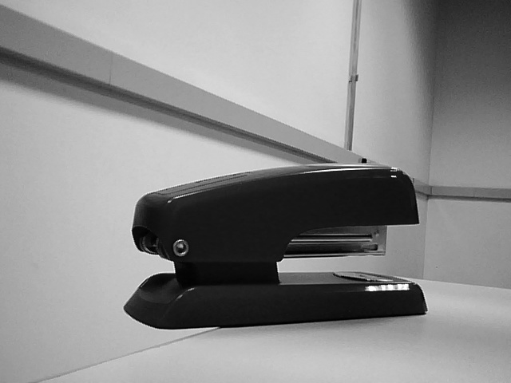

1. Introdução
Os objetivos do trabalho eram:
- Compreender a detecção de features, a aplicando em imagens, vídeos e em tempo real pela webcam.
- Compreender as resultantes disso em códigos de processamento de imagens utilizando o OpenCV em linguagem C++.
2. Fundamentos Básicos
Assim como em outros laboratórios, para a execução do experimento foi necessário a utilização da biblioteca OpenCV. Contudo, pela primeira vez dentre os métodos explorados, foi necessário contar com métodos do OpenCV Contrib, módulos extras e não devidamente validados, feitos de forma contributiva pela comunidade.
Neste caso, tivemos a detecção via Shi-Tomasi (implementada no OpenCV) e via SURF (Implementada nos módulos colaborativos).
Ambos são algoritmos para detecção de features. Detectar uma feature é compreender padrões para tentar encontrar os elementos mais relevantes dentro de um contexto - no caso, um frame ou imagem.
3. Materiais e Métodos
- Máquina com compilador C++ e dependências instaladas (principalmente, o OpenCV);
- Webcam ou câmera compatível;
- Editor de texto (Geanie, Github.dev, Visual Code ou outros);
- Execução experimental;
4. Resultados e Análises
Neste relatório, foram apresentados dois tutoriais principais:
- Shi-Tomasi: Detecção de Cantos
- Surf: Speeded-Up Robust Features
Para os quais (1) foi requisitado a implementação em código para uso com imagens previamente obtidas, salvando as resultantes. No item (2), foi requisitado que na implementação fosse incluso o uso de webcam, para detecção de features em tempo real.
Quanto à implementação do código, não houveram grandes problemas pois se tratava apenas de especializar aquilo que já era entregue nos exemplos-tutoriais. Ambos os exemplos foram implementados como opções no código, adotando Shi-Tomasi como default.
Note também que os códigos, abaixo, foram ajustados para conter entrada de argumentos e com isso, executar qualquer processamento sem recompilá-los. Logo, seguiremos aqui apontando as resultantes de cada execução solicitada ou realizada. Por exemplo, podemos executar:
.\Debug\feature_detection.exe --input="original_grayscale.jpg" --output="feature_surf_obj.png" --algo="SURF"
para executar o código de deteção lendo o arquivo original_grayscale.jpg, aplicando SURF e salvando em feature_surf_obj.png
(1) Detecção de Features em Imagens anteriores:
Imagem do grupo:

Feature Detection (Shi):
Feature Detection (Surf):
Imagem de objeto:
Feature Detection (Shi):
Feature Detection (Surf):
Por fim, temos os códigos. Para o item (1)
Nome do Script: feature_detection.cpp
E por fim, para o item (2):
Nome do Script: feature_detection_webcam.cpp
5. Conclusões e Comentários Finais
As detecções de features atuam de forma diferente: enquanto Shi-Tomasi tem como princípio identificar cantos, SURF é mais robusto. Isso fez com que o primeiro fosse muito bom em detectar involuntariamente o contorno dos itens (assim como sombreamentos intensos), enquanto o segundo "vazava" pelos itens.
Ambos são ferramentas úteis que podem ser implementadas para seus objetivos.